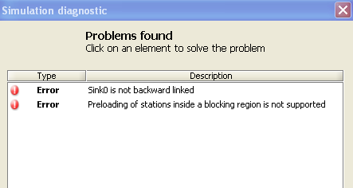

_____________________________________
JSIMgraph analyses the network before starting the effective execution of the simulation. If any errors or warnings are found, the following window with their description is shown.

Click on the error or warning message to open the panel when you can modify the bad properties or change the network.
In the following table you can see some common problems with their solution:
"StationX is not forward linked" |
Error |
This error occurs when the station (source or join) has not outgoing, or forward, links to any other station in the model. Only Sink stations do not have forward links. |
"StationX is not backward linked" |
Error |
Each station must have at least an incoming, or backward, link from other stations, for open class jobs to be able to leave the system. Only the Source station does not have a backward link. |
"No reference station defined for ClassX" |
Error |
For each class you must define a Reference Station that is used to estimate system throughput measure. Click on this error to open and set the missing reference station. |
"No performance indices defined" |
Error |
This error occurs when you try to start the simulation but no performance index is defined. See also "How to define performance indices". |
"Fork found but no join"
"Join without fork" |
Warning
Error |
Fork and Join stations should be inserted together in the model. If you have inserted only one of the two stations, when the simnulation is run JSIM will show a diagnostic message. Having a Fork without a Join is possible, although it may lead the system to saturate quickly, hence the Warning message. Having a Join without a Fork is a mistake, hence the Error message. The missing station must be added with the corresponding links, see section "How to define a network topology" for details. |
"SourceX without open classes associated" |
Error |
Insert in the network a Source only if you have an open class. If you have only a closed class, the source cannot be defined. But if you have open and closed classes you have to define a Source and a Sink in the network. This error appears when you have built a model with a source but without open customer classes. |
"No classes defined" |
Error |
Customer classes are a mandatory parameter of a model. If you forget to define any, the simulator will raise an error. See "step 2" or "How to define Customer classes". |
"A performance index is defined more than once" |
Error |
In the definition of the model output, the same index has been added more than once for the same station and class. Multiple occurrences must be removed. |
"Close class ClassX routed to station Served0 linked only to sink" |
Error |
Customers of closed classes keep circulating in the system. They may not visit a Sink station or a station that is connected on the outgoing link only to the Sink, since this would cause them to leave the system. The station connections must be changed. |
"Undefined station in performance index" |
Error |
When a new performance index is defined, a connected station should also be selected.Click on Performance Index from Define menu and select the correct station. |
"No station defined" |
Error |
You have to insert at least one station in the model. |
"Open class found but no source defined" |
Error |
When an open customer class is defined, a Source and a Sink must be added to the network (to generate and collect the jobs). Add a source to the network. |
"Closed class ClassX at station Server0 is routed to a sink with p=1" |
Error |
In the routing section of station Server0, the routing probability of a closed class job to a sink is one. This is an error because jobs cannot leave a closed model. Add an other link to connect the station with other components of the network and set the new routing probabilities. |
"Open classes were found but no sink have been defined" |
Error |
When an open customer class is defined, a Source and a Sink must be added to the network (to generate and collect the jobs). Add a sink to the network. |
"Sink without open classes" |
Error |
A sink is only used to collect customers of open classes. This means that a sink without any closed class is useless. |
"More than one sink defined, measures may not be accurate" |
Warning |
The evaluation of System Throughput performance index may be inaccurate with multiple sinks. We recommand to use one sink only. |
"What-if analysis model modified" |
Warning |
One What-if analysis has been defined but after the model has been modified adding a station. The analysis may not work properly. Redefine the What-if Analysis |
Finite Capacity Region "RegionX is empty |
Error |
You have defined a Finite Capacity Region that is empty. A Finite Capacity Region must contain least one station. |
Preloading of stations inside a finite capacity region is not supported |
Error |
This error appears because you have defined some initial states for the stations in the Finite Capacity Region. All Stations in a FCR must have initial state equal to 0 otherwise this error will appear. Preloading is not supported in FCR. |
When you try to Export model defined with JSIM to JMVA some additional errors can apper due to the assumptions that must hold in order to apply the MVA algorythm.
"XXX" routing strategy in ClassX for Source is not allowed. This was considered as RandomRouting" |
Warning |
A few constraints apply as for the admissible routing strategies. Round Robin routing is not implemented in JMVA, so it will be automatically transformed into Random, if you click the "Continue" button. Otherwise, you can change it following the link. |
"A state dependent routing strategy was found" |
Warning |
You have defined a Routing strategy that doesn't match the one of the BCMP theorem. Click on the warning message and choose if you want to convert all non state indipendent routing strategies to Random routing or change the routing strategy manually. |
"ServerX with non valid service time distribution" |
Warning |
You have defined a service time distribution not accepted by MVA. Modify the service time distribution to an exponential one. If "Continue" button is pressed, this distribution is considered as an Exponential with the same mean value of the original one. |
"What-if analysis not avaible" |
Warning |
When you have defined a WIA and you want to export the model in JMVA, this error appears because the JMVA can't support WIA. If "Continue" button is pressed, WIA is ignored. |
Different per-class queueing strategy found at StationX |
Warning |
This error appears during the export in JMVA because you have defined, for the stationX, a queue strategy different for the various classes. To export in JMVA, all queue strategies must be equal for all the classes. If "Continue" button is pressed, each queue strategy is considered as "Processor Sharing" |
Non uniform service strategy inside FCFS station StationX |
Warning |
A few constraints apply as for the admissible service time distributions. A FCFS station must have exponentially distributed service time with the same mean for all the classes of customers that visit the station. If you click the "Continue" button, this issue is ignored. |
Non exponential service time inside FCFS station StationX |
Warning |
A few constraints apply as for the admissible service time distributions. A FCFS station must have exponentially distributed service time with the same mean for all the classes of customers that visit the station. If you click the "Continue" button, this issue is ignored. |